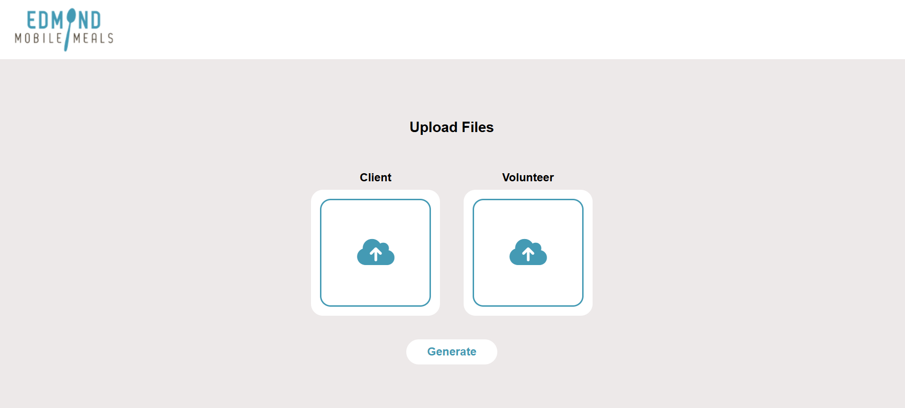
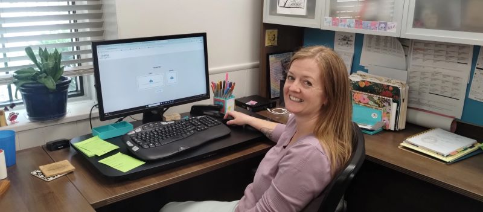

Volunteer Software Project
CallTree
A scheduling platform built for Edmond Mobile Meals that reduced volunteer assignment time from 2 hours to 2 seconds.

Overview
Volunteer software development project for Edmond Mobile Meals.
The application automatically assigns volunteers to clients using uploaded spreadsheets, replacing a fully manual scheduling process.
Impact
Manual assignment previously took nearly 2 hours. The system now completes the same workflow in roughly 2 seconds.
Heartbyte
This project was completed through Heartbyte, an organization I founded to provide free software solutions for local nonprofits.

